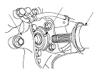
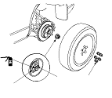

Rear Driveshaft Installation
NOTE: Before starting installation, make sure the mating surfaces of the joint and the splined section are free from dirt or dust.
Install the outboard joint (A) into the rear hub (B).
NOTE: Be careful not to damage the ABS wheel sensor (C).
Install the rear driveshafts into the rear differential assembly.

Apply a small amount of engine oil to the seating surface of the new spindle nut (A).
Install a new spindle nut, then tighten the nut. After tightening, use a drift to stake the spindle nut shoulder (B) against the driveshaft.
Clean the mating surfaces of the brake disc and the rear wheel, then install the rear wheel with the wheel nuts.
Turn the rear wheel by hand, and make sure there is no interference between the driveshaft and surrounding parts.
Refill the differential fluid.
